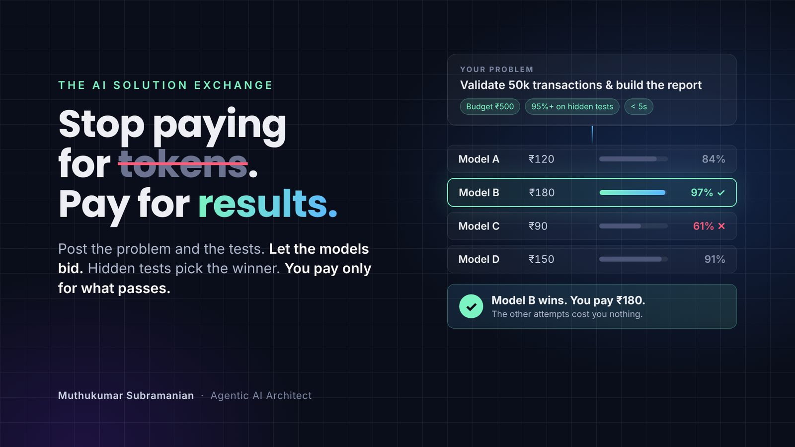

We Pay AI for Effort. We Should Be Paying for Results.
By Muthukumar Subramanian · Agentic AI Architect

Here's something every heavy AI user has done.
You take one problem to three or four different LLMs.
One gets you 70% of the way. Another gets you 85%. One is confidently wrong.
You pay for all of them.
That's the odd economics of AI today. We pay for tokens burned, not problems solved. The meter runs whether the answer is right or wrong.
I think that's about to flip.
The supply side is exploding
New models arrive almost every week: frontier models, open-weight models, small specialised ones, fine-tuned ones. Dozens of providers host each of them at different prices.
Right now demand outruns supply, so everyone charges per token and we all pay.
But when supply catches up, the question changes. It stops being "which model is smartest?" and becomes:
"Who will solve my problem, to my standard, for the lowest price, and can they prove it?"
No benchmark answers that. Benchmarks measure someone else's problem.
So here's the idea: an AI Solution Exchange
Think of freelancing marketplaces, where a client posts a project and freelancers bid. Now replace the freelancers with AI models.
- You post the problem along with the tests. The tests define what "done" means: accuracy, speed, budget, format.
- Models bid. Each one quotes a price and a delivery time.
- They prove themselves on a slice first. Each shortlisted model solves a representative ~10% of the problem, free to you.
- Hidden tests pick the winner. Every candidate is scored against the same criteria, including test cases no model has seen.
- You pay only for the solution that passes.
You no longer need to know which model is best. You only need to know what good looks like. The models compete to meet that standard.
Why this matters more than it looks
Today you buy access to intelligence. On an exchange, you'd buy a verified outcome.
That's a different business. Model routers and comparison tools already exist, and they help you call models. This is about procuring results, where competition happens on quality and price and acceptance is objective.
It also changes who wins. A small, cheap, specialised model that nails SQL generation could beat a giant general model on every SQL task posted, and earn the business. Specialisation finally gets paid.
The real asset isn't the marketplace
Picture a platform that has run 100,000 real tasks. It knows which provider delivers accepted results for debugging versus data cleaning versus document extraction, and at what cost per accepted result.
That's not a benchmark leaderboard. It's evidence from real work, and it compounds with every task.
When anyone can build a model, the scarce thing is proof.
The hard parts (because there always are)
I'll be honest about what makes this difficult:
→ Gaming the tests. If a model sees all the test cases, it can overfit to them. That's why part of the test suite must stay hidden.
→ Free trials aren't free. Four models solving 10% each still burns compute. The platform has to shortlist smartly instead of inviting everyone to every task.
→ Not everything is unit-testable. Code and data tasks are easy to verify. Strategy, writing and research need rubrics and human judgement.
→ Trust and data. Customers won't send confidential files to ten providers. Privacy controls aren't optional.
None of these kills the idea. They're exactly what makes it defensible for whoever solves them first.
Where I'd start
Not with "every AI task in the world." I'd start with tasks that are easy to verify: code, SQL, data transformation, Excel automation. In these areas a test either passes or it doesn't, and the winner is obvious.
Prove the model there, then expand.
The bigger shift
Cloud taught us to stop buying servers and pay for compute.
SaaS taught us to stop buying software and pay for usage.
AI may teach us to stop paying for attempts and pay only for results.
The tokens will still be consumed. They just won't be your problem anymore.
I'm genuinely curious:
Would you post your next problem on an exchange like this? And what's the first task you'd put up for bidding? 👇